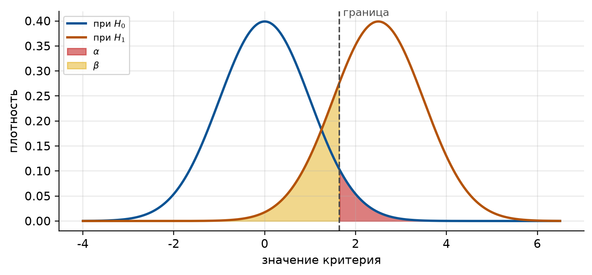
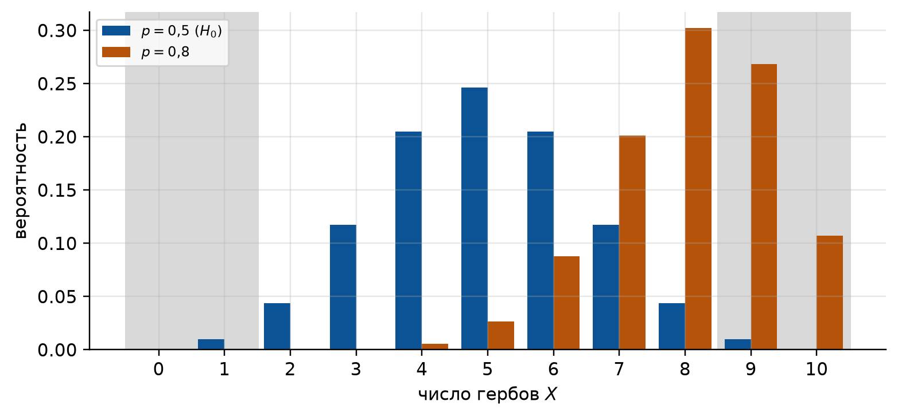
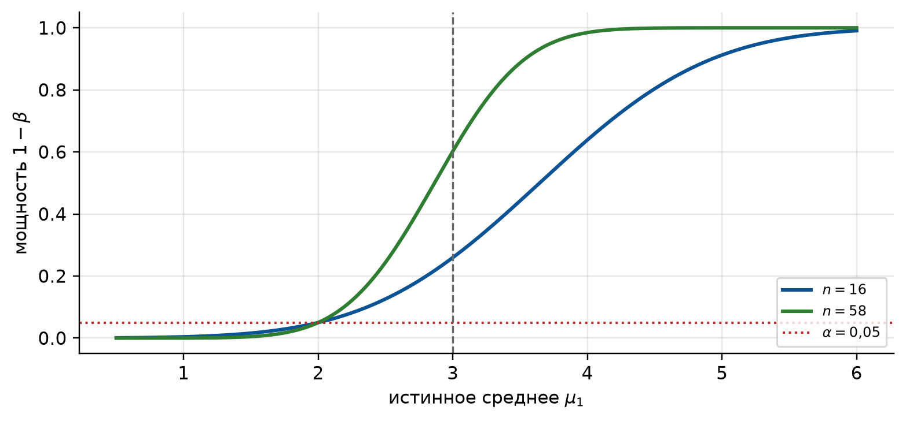

import numpy as np
import matplotlib.pyplot as plt
from math import ceil, sqrt
from scipy import stats
# Оформление графиков: шрифт с кириллицей и палитра, различимая при печати
PALETTE = ["#0b5394", "#b45309", "#2e7d32", "#7b1fa2", "#c62828", "#00838f"]
plt.rcParams.update({
"font.family": "sans-serif",
"font.sans-serif": ["DejaVu Sans", "Liberation Sans", "Noto Sans", "sans-serif"],
"axes.unicode_minus": False,
"axes.prop_cycle": plt.cycler(color=PALETTE),
"axes.spines.top": False,
"axes.spines.right": False,
"axes.grid": True,
"grid.alpha": 0.3,
"figure.dpi": 110,
"figure.constrained_layout.use": True,
})
# Генератор случайных чисел с фиксированным зерном: результаты воспроизводимы
rng = np.random.default_rng(2026)
# Виды конкурирующей гипотезы: "two" (≠), "right" (>), "left" (<)
SIDES = {"two": "двусторонняя", "right": "правосторонняя", "left": "левосторонняя"}
def z_crit(alpha, side):
"""Критическая точка для критерия с законом N(0, 1): z_{1-alpha/2} или z_{1-alpha}."""
return stats.norm.ppf(1 - alpha / 2 if side == "two" else 1 - alpha)
def t_crit(alpha, k, side):
"""Критическая точка для закона Стьюдента с k ст. св.: t_{1-alpha/2}(k) или t_{1-alpha}(k)."""
return stats.t.ppf(1 - alpha / 2 if side == "two" else 1 - alpha, k)
def rejects(stat, crit, side):
"""True, если значение критерия stat попало в критическую область с границей crit > 0."""
if side == "two":
return abs(stat) > crit
return stat > crit if side == "right" else stat < -crit
def p_value(stat, side, dist):
"""Достигнутый уровень значимости для значения stat; dist есть закон критерия при H0."""
if side == "two":
return 2 * dist.sf(abs(stat))
return dist.sf(stat) if side == "right" else dist.cdf(stat)
def report(name, stat, crit, side, dist):
"""Печатает значение критерия, границу области, p-значение и решение."""
border = {"two": f"|K| > {crit:.3f}", "right": f"K > {crit:.3f}", "left": f"K < {-crit:.3f}"}[side]
verdict = "H0 отвергаем" if rejects(stat, crit, side) else "нет оснований отвергнуть H0"
print(f"{name}: K = {stat:.3f}, {SIDES[side]} область {border}, p = {p_value(stat, side, dist):.4f}: {verdict}")
def z_stat(xbar, mu0, sigma, n):
"""Критерий для среднего при известном sigma: Z = (xbar - mu0) sqrt(n) / sigma."""
return (xbar - mu0) * np.sqrt(n) / sigma
def t_stat(xbar, mu0, s, n):
"""Критерий для среднего при неизвестном sigma: T = (xbar - mu0) sqrt(n) / s."""
return (xbar - mu0) * np.sqrt(n) / s
def paired(x, y):
"""Парные наблюдения: объём, среднее и исправленное с.к.о. разностей d = x - y, критерий T."""
d = np.asarray(x, dtype=float) - np.asarray(y, dtype=float)
n, dbar, sd = len(d), d.mean(), d.std(ddof=1)
return n, dbar, sd, dbar * np.sqrt(n) / sd
def prop_stat(m, n, p0):
"""Критерий для вероятности: Z = (m/n - p0) sqrt(n) / sqrt(p0 (1 - p0))."""
return (m / n - p0) * np.sqrt(n) / np.sqrt(p0 * (1 - p0))
def power_z(lam, alpha, side):
"""Мощность критерия с законом N(0, 1) при сдвиге lam = (mu1 - mu0) sqrt(n) / sigma."""
if side == "right":
return stats.norm.cdf(lam - z_crit(alpha, side))
if side == "left":
return stats.norm.cdf(-lam - z_crit(alpha, side))
z = z_crit(alpha, side)
return stats.norm.cdf(lam - z) + stats.norm.cdf(-lam - z)
def binom_reject(n, p, low, high):
"""Вероятность того, что число успехов из Bin(n, p) будет <= low или >= high."""
return stats.binom.cdf(low, n, p) + stats.binom.sf(high - 1, n, p)10 Семинар 11. Проверка статистических гипотез
Теория вероятностей и математическая статистика · НИЯУ МИФИ
Скачать PDF-раздатку этого семинара
10.1 Код для этой главы
Все импорты и функции, которые используются в примерах главы, собраны в одной ячейке. Выполните её первой: остальные ячейки опираются на неё.
10.2 Краткая сводка
На семинаре 10 по выборке строили интервал для параметра. Теперь вопрос другой: дано конкретное утверждение о параметре или о законе («станок настроен на 35 мм», «брака не больше 2 %»), и нужно решить, согласуется ли с ним выборка. Для этого служит проверка статистических гипотез. Критерии этого семинара построены на тех же законах, что и интервалы: \(N(0, 1)\), Стьюдента и \(\chi^2\).
Уведомление
Обозначения. В главе используются стандартные обозначения. У лектора и в задачнике то же самое записано иначе:
| Здесь | Лектор | Гмурман |
|---|---|---|
| \(\mu = \E X\), \(\mu_0\), \(\mu_1\) | \(M[X]\), \(m_x\) | \(a\), \(a_0\), \(a_1\) |
| \(\Phi\): функция распределения \(N(0, 1)\), \(\Phi(0) = 0{,}5\) | \(\Phi\): функция Лапласа, \(\Phi(0) = 0\) | \(\Phi\): функция Лапласа |
| \(\alpha\), \(\beta\), мощность \(1 - \beta\) | \(\alpha\), \(\beta\), \(1 - \beta\) | \(\alpha\), \(\beta\), \(1 - \beta\); функция мощности \(\pi(a_1)\) |
| критерий \(Z\) (закон \(N(0, 1)\)), \(T\) (Стьюдент) | \(K\), \(t\) | \(U\), \(T\) |
| \(z_{1-\alpha/2}\): двусторонняя граница | \(K_{\text{кр}}\): \(\Phi(K_{\text{кр}}) = \frac{1-\alpha}{2}\) | \(u_{\text{кр}}\): \(\Phi(u_{\text{кр}}) = \frac{1-\alpha}{2}\) |
| \(z_{1-\alpha}\): односторонняя граница | \(K_{\text{кр}}\): \(\Phi(K_{\text{кр}}) = \frac{1-2\alpha}{2}\) | \(u_{\text{кр}}\): \(\Phi(u_{\text{кр}}) = \frac{1-2\alpha}{2}\) |
| \(t_{1-\alpha/2}(k)\), \(t_{1-\alpha}(k)\) | \(t_{\text{кр}}\) по таблице дву- или односторонней области | \(t_{\text{двуст.кр}}(\alpha; k)\), \(t_{\text{правост.кр}}(\alpha; k)\) |
| \(\hat p = m/n\) | \(m/n\) | |
| \(d_i = x_i - y_i\), \(\bar d\), \(s_d\) | \(d_i\), \(\bar d\), \(s_d\) |
10.2.1 Гипотезы и ошибки
Статистическая гипотеза есть предположение о виде закона распределения или о значениях его параметров. Проверяемую гипотезу называют нулевой \(H_0\), ей противопоставляют конкурирующую (альтернативную) \(H_1\). Например, \(H_0\colon \mu = 35\) против \(H_1\colon \mu \neq 35\). Гипотеза простая, если она указывает закон полностью (\(\mu = 35\) при известном \(\sigma\)), и сложная, если это семейство простых (\(\mu > 35\)).
Решение принимается по выборке и поэтому может быть ошибочным:
| \(H_0\) верна | \(H_0\) неверна | |
|---|---|---|
| \(H_0\) отвергнута | ошибка первого рода, вероятность \(\alpha\) | верное решение, вероятность \(1 - \beta\) |
| \(H_0\) не отвергнута | верное решение | ошибка второго рода, вероятность \(\beta\) |
- Уровень значимости \(\alpha\) есть вероятность ошибки первого рода. Его выбирают заранее, обычно \(0{,}05\), \(0{,}01\) или \(0{,}001\): тем меньше, чем дороже ошибка отвергнуть верную гипотезу.
- Мощность критерия \(1 - \beta\) есть вероятность отвергнуть \(H_0\), когда верна \(H_1\). Она зависит от того, какое именно значение параметра верно: мощность есть функция от него.
- При фиксированном объёме выборки уменьшить \(\alpha\) можно только ценой роста \(\beta\) (задача 1). Уменьшить обе ошибки сразу позволяет только больший объём выборки (задача 3).
«Не отвергаем» не значит «доказали». Если данные не противоречат \(H_0\), говорят «нет оснований отвергнуть \(H_0\)». Это не доказательство её истинности: при малой мощности критерий не заметит и заметного отклонения (задача 6). Гипотезы несимметричны: под контролем только \(\alpha\).
10.2.2 Общая схема проверки
- Сформулировать \(H_0\) и \(H_1\). Вид \(H_1\) (\(\neq\), \(>\) или \(<\)) определяется вопросом задачи и выбирается до того, как посмотрели на данные.
- Выбрать критерий: статистику \(K\), которая измеряет расхождение выборки с \(H_0\) и закон которой при верной \(H_0\) известен.
- Задать уровень значимости \(\alpha\).
- По закону \(K\) при \(H_0\) найти критическую область: значения \(K\), маловероятные при \(H_0\) (в сумме вероятность \(\alpha\)) и характерные для \(H_1\).
- Вычислить по выборке \(K_{\text{набл}}\). Если оно в критической области, \(H_0\) отвергают; иначе нет оснований её отвергнуть.
Для критерия с законом \(N(0, 1)\) при \(H_0\) критическая область такая (для закона Стьюдента то же с квантилями \(t_p(k)\)):
| \(H_1\) | область | граница |
|---|---|---|
| \(\mu \neq \mu_0\) | двусторонняя: \(\lvert Z\rvert > z_{1-\alpha/2}\) | по \(\alpha/2\) в каждом хвосте |
| \(\mu > \mu_0\) | правосторонняя: \(Z > z_{1-\alpha}\) | вся \(\alpha\) справа |
| \(\mu < \mu_0\) | левосторонняя: \(Z < -z_{1-\alpha}\) | вся \(\alpha\) слева |
Односторонняя граница ближе к нулю (\(z_{0{,}95} = 1{,}645\) против \(z_{0{,}975} = 1{,}96\)): если отклонение ожидается только в одну сторону, критерий чувствительнее к нему.
fig, ax = plt.subplots(figsize=(7, 3.2))
grid = np.linspace(-4, 6.5, 800)
lam_fig, zc = 2.5, z_crit(0.05, "right")
pdf0, pdf1 = stats.norm.pdf(grid), stats.norm.pdf(grid, lam_fig)
ax.plot(grid, pdf0, color=PALETTE[0], lw=2, label="при $H_0$")
ax.plot(grid, pdf1, color=PALETTE[1], lw=2, label="при $H_1$")
ax.fill_between(grid, pdf0, where=grid >= zc, color=PALETTE[4], alpha=0.6, label="$\\alpha$")
ax.fill_between(grid, pdf1, where=grid <= zc, color="#e0a800", alpha=0.45, label="$\\beta$")
ax.axvline(zc, color="0.3", ls="--", lw=1.3)
ax.text(zc + 0.08, 0.41, "граница", fontsize=9, color="0.3")
ax.set_xlabel("значение критерия")
ax.set_ylabel("плотность")
ax.legend(fontsize=8, loc="upper left")
plt.show()
10.2.3 Критерии для одного параметра
Во всех случаях, кроме последнего, наблюдения считаются нормальными.
| \(H_0\) | критерий | закон при \(H_0\) |
|---|---|---|
| \(\mu = \mu_0\), \(\sigma\) известно | \(Z = \dfrac{(\bar x - \mu_0)\sqrt n}{\sigma}\) | \(N(0, 1)\) |
| \(\mu = \mu_0\), \(\sigma\) неизвестно | \(T = \dfrac{(\bar x - \mu_0)\sqrt n}{s}\) | \(t(n - 1)\) |
| парные наблюдения: \(\E(X - Y) = 0\) | \(T = \dfrac{\bar d\sqrt n}{s_d}\), \(d_i = x_i - y_i\) | \(t(n - 1)\) |
| \(\sigma = \sigma_0\) | \(\chi^2 = \dfrac{(n - 1)s^2}{\sigma_0^2}\) | \(\chi^2(n - 1)\) |
| \(p = p_0\) (схема Бернулли, \(n\) велико) | \(Z = \dfrac{(\hat p - p_0)\sqrt n}{\sqrt{p_0(1 - p_0)}}\) | примерно \(N(0, 1)\) |
Законы при \(H_0\) те же, что на семинаре 10: \(T\) подчинён закону Стьюдента по теореме Фишера, \((n-1)s^2/\sigma^2\) подчинено \(\chi^2(n - 1)\).
- Парные наблюдения: два измерения одного и того же объекта (одна деталь двумя приборами, один спортсмен до и после). Выборки зависимы, и сравнивают не два средних, а среднее разностей с нулём: это обычный критерий Стьюдента для выборки \(d_1, \dots, d_n\).
- Для вероятности под корнем стоит \(p_0\), а не \(\hat p\): закон критерия вычисляется в предположении, что верна \(H_0\). Нормальное приближение годится, когда \(np_0(1 - p_0)\) не мало (в задачнике \(np_0(1 - p_0) > 9\)).
- Критерий для \(\sigma\) и сравнение двух выборок разбираются на следующем семинаре.
10.2.4 Связь с доверительным интервалом
Двусторонний критерий \(H_0\colon \mu = \mu_0\) при известном \(\sigma\) не отвергает \(H_0\), когда \[ \left|\frac{(\bar x - \mu_0)\sqrt n}{\sigma}\right| < z_{1-\alpha/2} \iff \bar x - z_{1-\alpha/2}\frac{\sigma}{\sqrt n} < \mu_0 < \bar x + z_{1-\alpha/2}\frac{\sigma}{\sqrt n} . \tag{10.1}\] Справа стоит доверительный интервал семинара 10 с надёжностью \(\gamma = 1 - \alpha\). Значит, \(H_0\) отвергается на уровне \(\alpha\) тогда и только тогда, когда \(\mu_0\) лежит вне интервала с надёжностью \(1 - \alpha\). То же верно для критерия Стьюдента и интервала по Стьюденту, для \(\sigma\) и интервала по \(\chi^2\). Интервал даёт больше: он сразу показывает все значения \(\mu_0\), которые данные не отвергают.
10.2.5 Мощность критерия для среднего
Пусть \(\sigma\) известно, а на самом деле \(\mu = \mu_1\). Тогда \(Z = \frac{(\bar X - \mu_0)\sqrt n}{\sigma}\) подчинён закону \(N(\lambda, 1)\) со сдвигом \[ \lambda = \frac{(\mu_1 - \mu_0)\sqrt n}{\sigma}, \] и вероятность попасть в критическую область равна \[ 1 - \beta = \Phi(\lambda - z_{1-\alpha}) \quad (H_1\colon \mu > \mu_0), \qquad 1 - \beta = \Phi(\lambda - z_{1-\alpha/2}) + \Phi(-\lambda - z_{1-\alpha/2}) \quad (H_1\colon \mu \neq \mu_0). \tag{10.2}\] Мощность растёт с \(|\mu_1 - \mu_0|\), с \(n\) и с \(\alpha\). Объём, при котором правосторонний критерий имеет мощность \(1 - \beta\), находят из \(\lambda = z_{1-\alpha} + z_{1-\beta}\): \[ n = \left(\frac{(z_{1-\alpha} + z_{1-\beta})\,\sigma}{\mu_1 - \mu_0}\right)^2 \quad\text{(округляют вверх).} \]
10.2.6 Достигнутый уровень значимости
Вместо сравнения с границей часто сообщают \(p\)-значение: вероятность при верной \(H_0\) получить значение критерия не менее «крайнее», чем наблюдённое. Для двустороннего \(Z\)-критерия \(p = 2(1 - \Phi(|z_{\text{набл}}|))\), для правостороннего \(p = 1 - \Phi(z_{\text{набл}})\). \(H_0\) отвергают на уровне \(\alpha\) тогда и только тогда, когда \(p < \alpha\). Так результат выдают статистические программы (в scipy: stats.ttest_1samp, stats.ttest_rel и другие), и так его пишут в статьях. \(p\)-значение не есть вероятность того, что \(H_0\) верна.
Справка: квантили для задач главы. Квантили \(z_p\) закона \(N(0, 1)\):
| уровень \(p\) | 0,95 | 0,975 | 0,99 | 0,995 |
|---|---|---|---|---|
| \(z_p\) | 1,645 | 1,960 | 2,326 | 2,576 |
| граница для | одностор., \(\alpha = 0{,}05\) | двустор., \(\alpha = 0{,}05\) | одностор., \(\alpha = 0{,}01\) | двустор., \(\alpha = 0{,}01\) |
Для задач на мощность и объём выборки:
| уровень \(p\) | 0,6 | 0,7 | 0,8 | 0,9 |
|---|---|---|---|---|
| \(z_p\) | 0,253 | 0,524 | 0,842 | 1,282 |
Значения \(\Phi(x)\) берут по таблице функции распределения \(N(0, 1)\) (той же, что на контрольной) или в scipy: stats.norm.cdf(x); для отрицательных \(x\) \(\Phi(-x) = 1 - \Phi(x)\).
Квантили \(t_p(k)\) закона Стьюдента:
| \(k\) | \(p = 0{,}95\) | \(0{,}975\) | \(0{,}99\) | \(0{,}995\) |
|---|---|---|---|---|
| 5 | 2,015 | 2,571 | 3,365 | 4,032 |
| 7 | 1,895 | 2,365 | 2,998 | 3,499 |
| 8 | 1,860 | 2,306 | 2,896 | 3,355 |
| 9 | 1,833 | 2,262 | 2,821 | 3,250 |
| 12 | 1,782 | 2,179 | 2,681 | 3,055 |
| 15 | 1,753 | 2,131 | 2,602 | 2,947 |
| 19 | 1,729 | 2,093 | 2,539 | 2,861 |
Проверка: таблицы квантилей пересчитаны в scipy.
levels = (0.95, 0.975, 0.99, 0.995)
print("z_p:", [round(float(stats.norm.ppf(p)), 3) for p in levels + (0.6, 0.7, 0.8, 0.9)])
for k in (5, 7, 8, 9, 12, 15, 19):
print(f"t_p({k}):", [round(float(stats.t.ppf(p, k)), 3) for p in levels])z_p: [1.645, 1.96, 2.326, 2.576, 0.253, 0.524, 0.842, 1.282]
t_p(5): [2.015, 2.571, 3.365, 4.032]
t_p(7): [1.895, 2.365, 2.998, 3.499]
t_p(8): [1.86, 2.306, 2.896, 3.355]
t_p(9): [1.833, 2.262, 2.821, 3.25]
t_p(12): [1.782, 2.179, 2.681, 3.055]
t_p(15): [1.753, 2.131, 2.602, 2.947]
t_p(19): [1.729, 2.093, 2.539, 2.861]10.3 Блок A. Ошибки первого и второго рода
10.3.1 Задача 1
Чтобы проверить, симметрична ли монета, её подбрасывают 10 раз и считают число гербов \(X\). Монету признают несимметричной, если \(X \leqslant 1\) или \(X \geqslant 9\).
а) Сформулируйте \(H_0\) и \(H_1\). Что здесь критерий и какова критическая область?
б) Найдите уровень значимости \(\alpha\) этого правила.
в) Пусть на самом деле вероятность герба \(p = 0{,}8\). Найдите вероятность ошибки второго рода \(\beta\) и мощность.
г) Те же вопросы для правила «\(X \leqslant 2\) или \(X \geqslant 8\)». Какое правило лучше?
СоветРешение
а) \(H_0\colon p = 1/2\), \(H_1\colon p \neq 1/2\). Критерий есть число гербов \(X\); при \(H_0\) \(X \sim \text{Bin}(10, 1/2)\). Критическая область \(\{0, 1, 9, 10\}\), двусторонняя.
б) \(\alpha = \Prob(X \in \{0, 1, 9, 10\} \mid p = 1/2) = \frac{2(1 + 10)}{2^{10}} = \frac{22}{1024} \approx 0{,}021\).
в) Ошибка второго рода: \(H_0\) неверна (\(p = 0{,}8\)), но \(X\) попало в область принятия \(\{2, \dots, 8\}\): \[ \beta = \Prob(2 \leqslant X \leqslant 8 \mid p = 0{,}8) = 1 - \Prob(X \leqslant 1) - \Prob(X \geqslant 9) \approx 1 - 0{,}000 - 0{,}376 = 0{,}624 . \] Мощность \(1 - \beta \approx 0{,}376\): монету с \(p = 0{,}8\) это правило разоблачит только в трёх случаях из восьми.
г) Область \(\{0, 1, 2, 8, 9, 10\}\): \(\alpha = \frac{2(1 + 10 + 45)}{1024} = \frac{112}{1024} \approx 0{,}109\), \(\beta \approx 0{,}322\), мощность \(\approx 0{,}678\).
Расширив критическую область, мы уменьшили \(\beta\) почти вдвое, но \(\alpha\) выросла в пять раз. «Лучшего» правила нет, пока не сказано, какая ошибка дороже. Обе ошибки сразу уменьшает только большее число бросков.
Проверка: вероятности по биномиальному закону.
for low, high in [(1, 9), (2, 8)]:
a1 = binom_reject(10, 0.5, low, high)
pw = binom_reject(10, 0.8, low, high)
print(f"X <= {low} или X >= {high}: alpha = {a1:.4f} (= {round(a1 * 1024)}/1024), beta = {1 - pw:.4f}, мощность = {pw:.4f}")X <= 1 или X >= 9: alpha = 0.0215 (= 22/1024), beta = 0.6242, мощность = 0.3758
X <= 2 или X >= 8: alpha = 0.1094 (= 112/1024), beta = 0.3221, мощность = 0.6779fig, ax = plt.subplots(figsize=(7, 3.2))
k = np.arange(11)
ax.axvspan(-0.5, 1.5, color="0.85", zorder=0)
ax.axvspan(8.5, 10.5, color="0.85", zorder=0)
ax.bar(k - 0.2, stats.binom.pmf(k, 10, 0.5), width=0.4, color=PALETTE[0], label="$p = 0{,}5$ ($H_0$)")
ax.bar(k + 0.2, stats.binom.pmf(k, 10, 0.8), width=0.4, color=PALETTE[1], label="$p = 0{,}8$")
ax.set_xticks(k)
ax.set_xlabel("число гербов $X$")
ax.set_ylabel("вероятность")
ax.legend(fontsize=8, loc="upper left")
plt.show()
10.4 Блок B. Среднее при известном \(\sigma\)
10.4.1 Задача 2 (Гмурман, гл. 13 § 6, № 574, дополнена)
а) Из нормальной генеральной совокупности с известным средним квадратическим отклонением \(\sigma = 5{,}2\) извлечена выборка объёма \(n = 100\) и по ней найдена выборочная средняя \(\bar x = 27{,}56\). Требуется при уровне значимости 0,05 проверить нулевую гипотезу \(H_0\colon \mu = \mu_0 = 26\) при конкурирующей гипотезе \(H_1\colon \mu \neq 26\).
б) Постройте доверительный интервал для \(\mu\) с надёжностью 0,95 и сравните его с ответом п. а).
СоветРешение
а) \(\sigma\) известно, критерий \[ z_{\text{набл}} = \frac{(\bar x - \mu_0)\sqrt n}{\sigma} = \frac{(27{,}56 - 26)\cdot 10}{5{,}2} = 3 . \] \(H_1\) двусторонняя, \(\alpha = 0{,}05\), граница \(z_{0{,}975} = 1{,}96\). \(|z_{\text{набл}}| = 3 > 1{,}96\): \(H_0\) отвергаем, выборочная средняя значимо отличается от 26. Достигнутый уровень значимости \(p = 2(1 - \Phi(3)) = 0{,}0027\): \(H_0\) была бы отвергнута и при \(\alpha = 0{,}01\).
б) \(\delta = 1{,}96\cdot 5{,}2/10 = 1{,}02\), интервал \(26{,}54 < \mu < 28{,}58\). Число 26 в него не попало, что и означает отказ от \(H_0\) при \(\alpha = 1 - 0{,}95\) (формула Уравнение 10.1).
Проверка: критерий, \(p\)-значение и интервал.
z2 = z_stat(27.56, 26, 5.2, 100)
report("574", z2, z_crit(0.05, "two"), "two", stats.norm)
d2 = z_crit(0.05, "two") * 5.2 / 10
print(f"интервал 0,95: ({27.56 - d2:.2f}; {27.56 + d2:.2f})")574: K = 3.000, двусторонняя область |K| > 1.960, p = 0.0027: H0 отвергаем
интервал 0,95: (26.54; 28.58)10.4.2 Задача 3 (Гмурман, гл. 13 § 6, № 576 б)
По выборке объёма \(n = 16\), извлечённой из нормальной генеральной совокупности с известным средним квадратическим отклонением \(\sigma = 4\), при уровне значимости 0,05 проверяется нулевая гипотеза \(H_0\colon \mu = \mu_0 = 2\) при конкурирующей гипотезе \(H_1\colon \mu > 2\). Требуется: 1) найти мощность правостороннего критерия для гипотетического значения генеральной средней \(\mu = \mu_1 = 3\); 2) найти объём выборки \(n_1\), при котором мощность критерия равна 0,6.
СоветРешение
1) Правосторонняя область: \(z_{\text{набл}} > z_{0{,}95} = 1{,}645\). Если \(\mu = 3\), критерий подчинён \(N(\lambda, 1)\) со сдвигом \(\lambda = \frac{(3 - 2)\sqrt{16}}{4} = 1\). По формуле (Уравнение 10.2) \[ 1 - \beta = \Prob(Z > 1{,}645) = \Phi(\lambda - 1{,}645) = \Phi(-0{,}645) = 0{,}259 . \] Если среднее на самом деле 3, критерий заметит это лишь примерно в четверти случаев; \(\beta \approx 0{,}74\).
2) Нужно \(\Phi(\lambda_1 - 1{,}645) = 0{,}6\), то есть \(\lambda_1 - 1{,}645 = z_{0{,}6} = 0{,}253\) и \(\lambda_1 = 1{,}898\). Из \(\lambda_1 = \frac{(3 - 2)\sqrt{n_1}}{4}\): \(\sqrt{n_1} = 7{,}59\), \(n_1 = 57{,}7\), берём \(n_1 = 58\).
В задачнике граница взята как \(1{,}65\), поэтому мощность в п. 1 там \(0{,}2578\); ответ \(n_1 = 58\) тот же.
Проверка: мощность по формуле и по моделированию 100 000 выборок при \(\mu = 3\).
lam3 = (3 - 2) * sqrt(16) / 4
print(f"мощность по формуле: {power_z(lam3, 0.05, 'right'):.4f}")
xbar3 = rng.normal(3, 4, size=(100_000, 16)).mean(axis=1)
print(f"доля отказов от H0 в модели: {(z_stat(xbar3, 2, 4, 16) > z_crit(0.05, 'right')).mean():.4f}")
lam_need = z_crit(0.05, "right") + stats.norm.ppf(0.6)
n_need = (lam_need * 4 / (3 - 2)) ** 2
print(f"n1 = {n_need:.2f}, берём {ceil(n_need)}; мощность при n1: {power_z((3 - 2) * sqrt(ceil(n_need)) / 4, 0.05, 'right'):.4f}")мощность по формуле: 0.2595
доля отказов от H0 в модели: 0.2591
n1 = 57.65, берём 58; мощность при n1: 0.6022fig, ax = plt.subplots(figsize=(7, 3.2))
mu_grid = np.linspace(0.5, 6, 400)
for n_plot, color in [(16, PALETTE[0]), (58, PALETTE[2])]:
ax.plot(mu_grid, power_z((mu_grid - 2) * np.sqrt(n_plot) / 4, 0.05, "right"), color=color, lw=2, label=f"$n = {n_plot}$")
ax.axhline(0.05, color=PALETTE[4], ls=":", lw=1.3, label="$\\alpha = 0{,}05$")
ax.axvline(3, color="0.4", ls="--", lw=1.1)
ax.set_xlabel("истинное среднее $\\mu_1$")
ax.set_ylabel("мощность $1 - \\beta$")
ax.legend(fontsize=8, loc="lower right")
plt.show()
10.5 Блок C. Среднее при неизвестном \(\sigma\)
10.5.1 Задача 4 (Гмурман, гл. 13 § 6, № 579)
а) По выборке объёма \(n = 16\), извлечённой из нормальной генеральной совокупности, найдены выборочная средняя \(\bar x = 118{,}2\) и исправленное среднее квадратическое отклонение \(s = 3{,}6\). Требуется при уровне значимости 0,05 проверить нулевую гипотезу \(H_0\colon \mu = \mu_0 = 120\) при конкурирующей гипотезе \(H_1\colon \mu \neq 120\).
б) Решить эту задачу, приняв в качестве конкурирующей гипотезы \(H_1\colon \mu < 120\).
СоветРешение
\(\sigma\) неизвестно, критерий Стьюдента с \(k = 16 - 1 = 15\): \[ t_{\text{набл}} = \frac{(\bar x - \mu_0)\sqrt n}{s} = \frac{(118{,}2 - 120)\cdot 4}{3{,}6} = -2 . \]
а) Двусторонняя область: \(|t| > t_{0{,}975}(15) = 2{,}131\). \(|t_{\text{набл}}| = 2 < 2{,}131\): нет оснований отвергнуть \(H_0\) (\(p = 0{,}064\)).
б) Левосторонняя область: \(t < -t_{0{,}95}(15) = -1{,}753\). \(t_{\text{набл}} = -2 < -1{,}753\): \(H_0\) отвергаем (\(p = 0{,}032\)).
Одни и те же данные дают разные решения. Левосторонний критерий всю вероятность \(\alpha\) кладёт в левый хвост, поэтому граница ближе к нулю, и отклонение влево он замечает легче. Зато отклонение вправо он не заметит никогда.
Проверка: оба варианта.
t4 = t_stat(118.2, 120, 3.6, 16)
report("а) mu != 120", t4, t_crit(0.05, 15, "two"), "two", stats.t(15))
report("б) mu < 120", t4, t_crit(0.05, 15, "left"), "left", stats.t(15))а) mu != 120: K = -2.000, двусторонняя область |K| > 2.131, p = 0.0639: нет оснований отвергнуть H0
б) mu < 120: K = -2.000, левосторонняя область K < -1.753, p = 0.0320: H0 отвергаем
ПредупреждениеТипичная ошибка
Выбирать \(H_1\) после того, как посмотрели на данные: «\(\bar x\) меньше 120, значит, возьмём левостороннюю область». Если так делать всегда, \(H_0\) отвергается при \(|t| > t_{0{,}95}\) в любую сторону, и настоящий уровень значимости становится \(2\alpha = 0{,}1\), а не \(0{,}05\). Вид \(H_1\) задаёт вопрос, поставленный до опыта.
10.5.2 Задача 5 (Гмурман, гл. 13 § 7, № 581)
Двумя приборами в одном и том же порядке измерены шесть деталей и получены следующие результаты измерений (в сотых долях миллиметра):
| деталь | 1 | 2 | 3 | 4 | 5 | 6 |
|---|---|---|---|---|---|---|
| \(x_i\) | 2 | 3 | 5 | 6 | 8 | 10 |
| \(y_i\) | 10 | 3 | 6 | 1 | 7 | 4 |
При уровне значимости 0,05 установить, значимо или незначимо различаются результаты измерений, в предположении, что они распределены нормально.
СоветРешение
Каждую деталь мерили оба прибора, поэтому выборки зависимы: сравниваем разности \(d_i = x_i - y_i\) с нулём. \(H_0\colon \E D = 0\), \(H_1\colon \E D \neq 0\).
\(d = -8,\ 0,\ -1,\ 5,\ 1,\ 6\); \(\sum d_i = 3\), \(\bar d = 0{,}5\); \(\sum d_i^2 = 127\), \(s_d = \sqrt{\frac{127 - 3^2/6}{5}} = \sqrt{25{,}1} = 5{,}01\). \[ t_{\text{набл}} = \frac{\bar d\sqrt n}{s_d} = \frac{0{,}5\sqrt 6}{5{,}01} = 0{,}24 . \] Граница \(t_{0{,}975}(5) = 2{,}571\); \(0{,}24 < 2{,}571\): нет оснований отвергнуть \(H_0\), приборы различаются незначимо.
Через интервал: для \(\E D\) с надёжностью 0,95 \(0{,}5 \mp 2{,}571\cdot 5{,}01/\sqrt 6\), то есть \(-4{,}76 < \E D < 5{,}76\). Ноль внутри. Интервал очень широкий: по шести деталям с таким разбросом разностей нельзя заметить даже систематическое расхождение в 4 сотых мм.
Проверка: расчёт по формулам и stats.ttest_rel.
x5, y5 = [2, 3, 5, 6, 8, 10], [10, 3, 6, 1, 7, 4]
n5, dbar5, sd5, t5 = paired(x5, y5)
print(f"n = {n5}, dbar = {dbar5:.3f}, s_d = {sd5:.3f}")
report("581", t5, t_crit(0.05, n5 - 1, "two"), "two", stats.t(n5 - 1))
print("scipy ttest_rel:", stats.ttest_rel(x5, y5))n = 6, dbar = 0.500, s_d = 5.010
581: K = 0.244, двусторонняя область |K| > 2.571, p = 0.8166: нет оснований отвергнуть H0
scipy ttest_rel: TtestResult(statistic=np.float64(0.2444605411417123), pvalue=np.float64(0.8165892159697635), df=np.int64(5))10.6 Блок D. Вероятность по частоте
10.6.1 Задача 6 (Гмурман, гл. 13 § 8, № 588, дополнена)
а) Партия изделий принимается, если вероятность того, что изделие окажется бракованным, не превышает 0,02. Среди случайно отобранных 480 изделий оказалось 12 дефектных. Можно ли принять партию? Уровень значимости 0,05.
б) Какова вероятность принять партию, если на самом деле вероятность брака равна 0,03? Что означает ответ п. а)?
СоветРешение
а) \(H_0\colon p = 0{,}02\); опасно, если брака больше, поэтому \(H_1\colon p > 0{,}02\), область правосторонняя. \(\hat p = 12/480 = 0{,}025\), \[ z_{\text{набл}} = \frac{(0{,}025 - 0{,}02)\sqrt{480}}{\sqrt{0{,}02\cdot 0{,}98}} = 0{,}78 . \] Граница \(z_{0{,}95} = 1{,}645\); \(0{,}78 < 1{,}645\): нет оснований отвергнуть \(H_0\), партию принимают. Условие применимости: \(np_0(1 - p_0) = 9{,}4 > 9\).
б) Партию отвергают, когда \(\hat p > 0{,}02 + 1{,}645\sqrt{0{,}02\cdot 0{,}98/480} = 0{,}0305\), то есть при 15 и более дефектных. Если \(p = 0{,}03\), то \(\hat p \approx N\big(0{,}03,\ 0{,}03\cdot 0{,}97/480\big)\) и \[ \Prob(\hat p > 0{,}0305) \approx 1 - \Phi\!\left(\frac{0{,}0305 - 0{,}03}{\sqrt{0{,}03\cdot 0{,}97/480}}\right) = 1 - \Phi(0{,}07) \approx 0{,}47 . \] Партию с браком 3 %, в полтора раза выше допуска, критерий примет с вероятностью около \(0{,}53\). Поэтому вывод п. а) означает только «выборка не противоречит тому, что брак не выше 2 %», но не «доказано, что брак не выше 2 %». Чтобы надёжно отличать 2 % от 3 %, нужна выборка в несколько раз больше.
Проверка: критерий, граница по числу дефектных и мощность (по нормальному приближению и точно по биномиальному закону).
report("588", prop_stat(12, 480, 0.02), z_crit(0.05, "right"), "right", stats.norm)
p_border = 0.02 + z_crit(0.05, "right") * sqrt(0.02 * 0.98 / 480)
m_border = ceil(p_border * 480)
print(f"граница: p > {p_border:.4f}, то есть m >= {m_border}")
approx = stats.norm.sf((p_border - 0.03) / sqrt(0.03 * 0.97 / 480))
exact = stats.binom.sf(m_border - 1, 480, 0.03)
print(f"мощность при p = 0,03: приближённо {approx:.3f}, точно {exact:.3f}")
print(f"вероятность принять партию при p = 0,03: {1 - exact:.3f}")588: K = 0.782, правосторонняя область K > 1.645, p = 0.2170: нет оснований отвергнуть H0
граница: p > 0.0305, то есть m >= 15
мощность при p = 0,03: приближённо 0.474, точно 0.473
вероятность принять партию при p = 0,03: 0.527
ПредупреждениеТипичная ошибка
Читать «нет оснований отвергнуть \(H_0\)» как «\(H_0\) доказана» или «\(H_0\) верна с вероятностью 0,95». Число 0,95 здесь \(1 - \alpha\): вероятность не отвергнуть \(H_0\), если она верна. Насколько можно доверять принятию, говорит мощность, а она здесь около 0,5.
УведомлениеДля самопроверки
(Гмурман, № 586, 587.) По 100 независимым испытаниям найдена относительная частота \(\hat p = 0{,}14\). При уровне значимости 0,05 проверить \(H_0\colon p = 0{,}20\) при \(H_1\colon p \neq 0{,}20\); то же при \(H_1\colon p < 0{,}20\). Ответ: \(z_{\text{набл}} = -1{,}5\); в обоих случаях нет оснований отвергнуть \(H_0\) (\(|{-1{,}5}| < 1{,}96\) и \(-1{,}5 > -1{,}645\)).
10.7 Задачи для самостоятельной работы
(Гмурман, № 575.) а) Из нормальной генеральной совокупности с известным средним квадратическим отклонением \(\sigma = 40\) извлечена выборка объёма \(n = 64\) и по ней найдена выборочная средняя \(\bar x = 136{,}5\). Требуется при уровне значимости 0,01 проверить нулевую гипотезу \(H_0\colon \mu = \mu_0 = 130\) при конкурирующей гипотезе \(H_1\colon \mu \neq 130\). б) Решить эту задачу при конкурирующей гипотезе \(H_1\colon \mu > 130\). в) Установлено, что средний вес таблетки лекарства сильного действия должен быть равен \(\mu_0 = 0{,}50\) мг. Выборочная проверка 121 таблетки полученной партии лекарства показала, что средний вес таблетки этой партии \(\bar x = 0{,}53\) мг. Требуется при уровне значимости 0,01 проверить нулевую гипотезу \(H_0\colon \mu = \mu_0 = 0{,}50\) при конкурирующей гипотезе \(H_1\colon \mu > 0{,}50\). Многократными предварительными опытами установлено, что вес таблеток распределён нормально со средним квадратическим отклонением \(\sigma = 0{,}11\) мг.
(Гмурман, № 576 в.) По выборке объёма \(n = 9\), извлечённой из нормальной генеральной совокупности с известным средним квадратическим отклонением \(\sigma = 4\), при уровне значимости 0,05 проверяется нулевая гипотеза \(H_0\colon \mu = \mu_0 = 15\) при конкурирующей гипотезе \(H_1\colon \mu > 15\). Требуется: 1) найти мощность правостороннего критерия для гипотетического значения генеральной средней \(\mu_1 = 17\);
- найти объём выборки \(n_1\), при котором мощность критерия равна 0,8.
(Гмурман, № 577 в.) По выборке объёма \(n = 36\), извлечённой из нормальной генеральной совокупности с известным средним квадратическим отклонением \(\sigma = 6\), при уровне значимости 0,01 проверяется нулевая гипотеза \(H_0\colon \mu = \mu_0 = 15\) при конкурирующей гипотезе \(H_1\colon \mu \neq \mu_0\). Найти мощность двустороннего критерия для гипотетического значения генеральной средней \(\mu_1 = 12\).
(Гмурман, № 578 б.) При больших \(n\) выборочная медиана распределена приближённо нормально со средним \(\mu\) и средним квадратическим отклонением \(\frac{\sigma}{\sqrt n}\sqrt{\frac{\pi}{2}}\). По выборке объёма \(n = 50\) из нормальной совокупности с \(\sigma = 5\) при уровне значимости 0,05 проверяется \(H_0\colon \mu = 18\) при \(H_1\colon \mu \neq 18\). Сравнить мощности двусторонних критериев по выборочной средней и по выборочной медиане при \(\mu_1 = 20\). Можно ли предвидеть результат сравнения, не производя вычислений?
(Гмурман, № 582.) На двух аналитических весах, в одном и том же порядке, взвешены 10 проб химического вещества и получены следующие результаты взвешиваний (в мг):
\(x_i\) 25 30 28 50 20 40 32 36 42 38 \(y_i\) 28 31 26 52 24 36 33 35 45 40 При уровне значимости 0,01 установить, значимо или незначимо различаются результаты взвешиваний, в предположении, что они распределены нормально.
(Гмурман, № 584.) Химическая лаборатория произвела в одном и том же порядке анализ 8 проб двумя методами (содержание вещества в процентах; первая строка: первым методом, вторая: вторым):
\(x_i\) 15 20 16 22 24 14 18 20 \(y_i\) 15 22 14 25 29 16 20 24 Требуется при уровне значимости 0,05 установить, значимо или незначимо различаются средние результаты анализов, в предположении, что они распределены нормально.
(Гмурман, № 589.) Партия изделий принимается, если вероятность того, что изделие окажется бракованным, не превышает 0,03. Среди случайно отобранных 400 изделий оказалось 18 бракованных. Можно ли принять партию? Уровень значимости 0,05.
(Гмурман, № 590.) Завод рассылает рекламные каталоги возможным заказчикам. Как показал опыт, вероятность того, что организация, получившая каталог, закажет рекламируемое изделие, равна 0,08. Завод разослал 1000 каталогов новой улучшенной формы и получил 100 заказов. Можно ли считать, что новая форма рекламы оказалась значимо эффективнее первой? Уровень значимости 0,05.
(Гмурман, № 591, изменена.) В результате длительных наблюдений установлено, что вероятность полного выздоровления больного, принимавшего лекарство \(A\), равна 0,8. Новое лекарство \(B\) назначено 800 больным, причём 660 из них полностью выздоровели. Можно ли считать новое лекарство значимо эффективнее лекарства \(A\) на пятипроцентном уровне значимости? Какую конкурирующую гипотезу здесь нужно взять?
СоветОтветы
- а) \(z_{\text{набл}} = 1{,}3 < z_{0{,}995} = 2{,}576\): нет оснований отвергнуть \(H_0\); б) \(1{,}3 < z_{0{,}99} = 2{,}326\): нет оснований; в) \(z_{\text{набл}} = 3 > 2{,}326\): \(H_0\) отвергаем, таблетки тяжелее нормы.
- \(\lambda = 1{,}5\); 1) \(1 - \beta = \Phi(1{,}5 - 1{,}645) = 0{,}442\);
- \(\lambda_1 = 1{,}645 + 0{,}842 = 2{,}487\), \(n_1 = 24{,}7\), берём \(n_1 = 25\).
- \(\lambda = -3\), \(1 - \beta = \Phi(-3 - 2{,}576) + \Phi(3 - 2{,}576) = 0{,}664\).
- По средней \(\lambda = 2{,}83\), мощность \(0{,}807\); по медиане \(\lambda = 2{,}83/\sqrt{\pi/2} = 2{,}26\), мощность \(0{,}617\). Предвидеть можно: дисперсия медианы в \(\pi/2\) раз больше, при той же \(\alpha\) критерий по ней менее мощный. В задачнике мощность по медиане \(0{,}6103\); по той же формуле получается \(0{,}617\).
- \(\bar d = -0{,}9\), \(s_d = 2{,}51\), \(t_{\text{набл}} = -1{,}13\); \(|t| < t_{0{,}995}(9) = 3{,}250\): различаются незначимо.
- \(\bar d = -2\), \(s_d = 2{,}20\), \(t_{\text{набл}} = -2{,}57\); \(|t| > t_{0{,}975}(7) = 2{,}365\): различаются значимо.
- \(\hat p = 0{,}045\), \(z_{\text{набл}} = 1{,}76 > 1{,}645\) (\(H_1\colon p > 0{,}03\)): \(H_0\) отвергаем, партию не принимать.
- \(z_{\text{набл}} = 2{,}33 > 1{,}645\) (\(H_1\colon p > 0{,}08\)): новая форма значимо эффективнее.
- \(\hat p = 0{,}825\), \(z_{\text{набл}} = 1{,}77\). Вопрос «эффективнее ли» задаёт \(H_1\colon p > 0{,}8\): \(1{,}77 > 1{,}645\), лекарство \(B\) значимо эффективнее. При двусторонней \(H_1\colon p \neq 0{,}8\) (так в указании и в ответе задачника) \(1{,}77 < 1{,}96\) и различие незначимо: ответ зависит от выбора \(H_1\), и выбирать его нужно до опыта, по вопросу.
Проверка: ответы к задачам для самостоятельной работы.
report("1а", z_stat(136.5, 130, 40, 64), z_crit(0.01, "two"), "two", stats.norm)
report("1б", z_stat(136.5, 130, 40, 64), z_crit(0.01, "right"), "right", stats.norm)
report("1в", z_stat(0.53, 0.50, 0.11, 121), z_crit(0.01, "right"), "right", stats.norm)
lam_hw2 = (17 - 15) * sqrt(9) / 4
n_hw2 = ((z_crit(0.05, "right") + stats.norm.ppf(0.8)) * 4 / 2) ** 2
print(f"2: мощность {power_z(lam_hw2, 0.05, 'right'):.3f}, n1 = {n_hw2:.2f}, берём {ceil(n_hw2)}")
print(f"3: мощность {power_z((12 - 15) * sqrt(36) / 6, 0.01, 'two'):.3f}")
lam_hw4 = (20 - 18) * sqrt(50) / 5
print(f"4: по средней {power_z(lam_hw4, 0.05, 'two'):.3f}, по медиане {power_z(lam_hw4 / sqrt(np.pi / 2), 0.05, 'two'):.3f}")
for name, x_hw, y_hw, a_hw in [
("5", [25, 30, 28, 50, 20, 40, 32, 36, 42, 38], [28, 31, 26, 52, 24, 36, 33, 35, 45, 40], 0.01),
("6", [15, 20, 16, 22, 24, 14, 18, 20], [15, 22, 14, 25, 29, 16, 20, 24], 0.05),
]:
n_hw, dbar_hw, sd_hw, t_hw = paired(x_hw, y_hw)
print(f"{name}: dbar = {dbar_hw:.3f}, s_d = {sd_hw:.3f}")
report(name, t_hw, t_crit(a_hw, n_hw - 1, "two"), "two", stats.t(n_hw - 1))
report("7", prop_stat(18, 400, 0.03), z_crit(0.05, "right"), "right", stats.norm)
report("8", prop_stat(100, 1000, 0.08), z_crit(0.05, "right"), "right", stats.norm)
report("9 (p > 0,8)", prop_stat(660, 800, 0.8), z_crit(0.05, "right"), "right", stats.norm)
report("9 (p != 0,8)", prop_stat(660, 800, 0.8), z_crit(0.05, "two"), "two", stats.norm)1а: K = 1.300, двусторонняя область |K| > 2.576, p = 0.1936: нет оснований отвергнуть H0
1б: K = 1.300, правосторонняя область K > 2.326, p = 0.0968: нет оснований отвергнуть H0
1в: K = 3.000, правосторонняя область K > 2.326, p = 0.0013: H0 отвергаем
2: мощность 0.442, n1 = 24.73, берём 25
3: мощность 0.664
4: по средней 0.807, по медиане 0.617
5: dbar = -0.900, s_d = 2.514
5: K = -1.132, двусторонняя область |K| > 3.250, p = 0.2869: нет оснований отвергнуть H0
6: dbar = -2.000, s_d = 2.204
6: K = -2.567, двусторонняя область |K| > 2.365, p = 0.0372: H0 отвергаем
7: K = 1.759, правосторонняя область K > 1.645, p = 0.0393: H0 отвергаем
8: K = 2.331, правосторонняя область K > 1.645, p = 0.0099: H0 отвергаем
9 (p > 0,8): K = 1.768, правосторонняя область K > 1.645, p = 0.0385: H0 отвергаем
9 (p != 0,8): K = 1.768, двусторонняя область |K| > 1.960, p = 0.0771: нет оснований отвергнуть H0